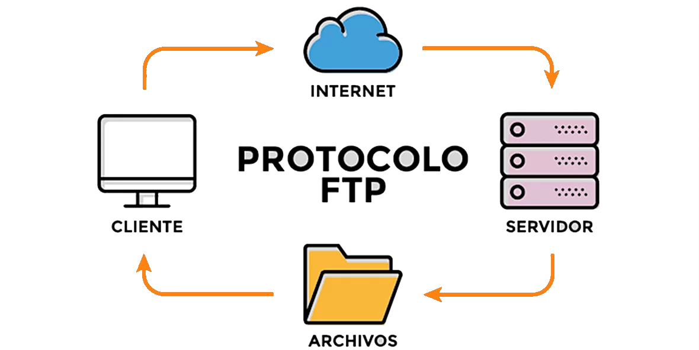
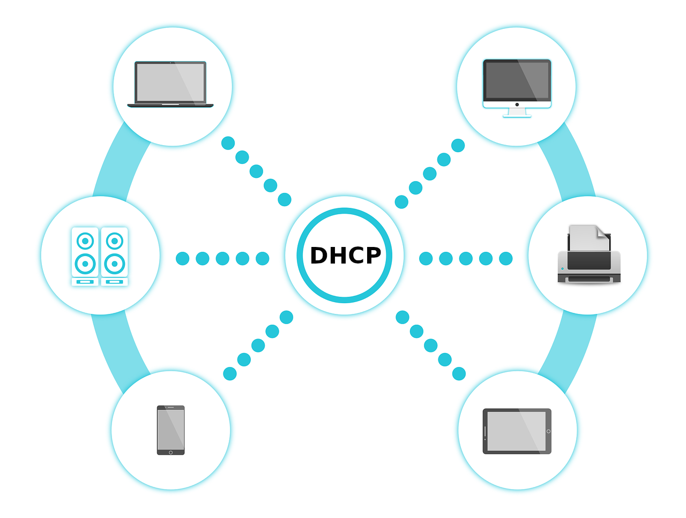

Servidor DNS Traducción de nombres
¿Qué es? Un sistema que convierte nombres de dominio legibles (p. ej., www.google.com) en direcciones IP que usan las computadoras.
¿Para qué sirve? Para que puedas escribir nombres fáciles en lugar de números largos.
Ejemplo: www.google.com → 142.250.72.36 (IP de ejemplo).
Servidor WEB Entrega páginas
¿Qué es? Un software (como Apache, Nginx o IIS) que publica sitios y APIs en Internet.
Función: Responder a peticiones HTTP/HTTPS y devolver HTML, CSS, JS, imágenes o datos.
Ejemplos diarios: redes sociales, periódicos en línea, plataformas de educación y banca web.

Servidor FTP Archivos
¿Para qué se usa? Para subir y descargar archivos entre un cliente y un servidor.
- FTP/FTPS: versión básica y con cifrado (TLS).
- SFTP: transferencia segura sobre SSH (distinto a FTP clásico).
Ejemplo: actualizar el contenido de un sitio subiendo imágenes o documentos.
Servidor DHCP IP automáticas
¿Qué hace? Asigna automáticamente direcciones IP, máscara, puerta de enlace y DNS a los dispositivos de la red.
Ejemplo: el router de tu casa da una IP distinta a tu teléfono y a tu laptop cuando se conectan al Wi‑Fi.
Servidor de Correos SMTP / IMAP / POP3
Enviar vs Recibir:
- SMTP (salida): protocolo para enviar correos desde el cliente hacia el servidor y entre servidores.
- IMAP (entrada): recibir y sincronizar correos con el servidor, manteniendo carpetas y estado en todos tus dispositivos.
- POP3 (entrada): descarga los mensajes al dispositivo; por defecto no sincroniza carpetas ni estados.
Ejemplo: tu app de correo usa SMTP para enviar y IMAP/POP3 para descargar/leer.